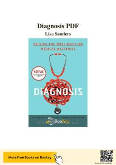

DMurakkab tibbiy topishmoqlar va ularni yechish jarayoni haqidagi qiziqarli hikoyalar to'plami.
Lisa Sanders o'zining mashhur tibbiy maqolalari asosida murakkab va sirli kasalliklarni tashxislash jarayonini yoritib beradi. Kitob shifokorlarning bemorlar bilan ishlashdagi izlanishlari, tahlillari va tibbiyotdagi kutilmagan qiyinchiliklar haqidagi haqiqiy voqealarni o'z ichiga oladi.